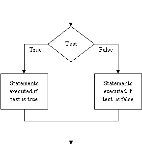

SIPO style programming is not enough for all situations because there are many areas in which the processing to be done depends on the input, e.g.
To accommodate such situations we need the ability to process data selectively. Imperative/procedural programming languages (like Python) achieve this by using selection statements. To handle the cases above we test something (your earnings, your work quality, the shape of the figure, or someone's employment status) to determine how processing should proceed. The result of the test is used to select the processing to carry out.
The most common selection command is the if statement. In
Python the basic if statement looks like this (we'll see some
variations next week),
if test :
statements to do if the test is true
else:
statements to do if the test is falseThe test evaluates some condition, e.g. that the input
is less than 100. If it is (that is, if the test is true), the first
group of statements are executed, and the second group of statements (after
else) are skipped. If the test is not true, then the first group
of statements is skipped, and the second group of statements are executed. In
either case only one of the two groups of statements is executed. Thus the
if statement selects which group of statements to execute
depending on the outcome of the test.
This can be presented diagramatically by a flowchart like this:
